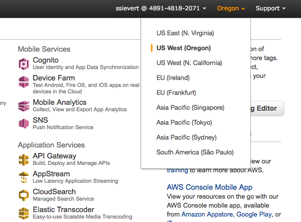

Setup¶
If not familiar with the command line, visit a command line tutorial.
If you’re running into bugs while setting up, look at troubleshooting.
Complete setup guides¶
... can be found on the GitHub wiki.
Quick setup script¶
This will provide
- an easy-to-type command,
next_ec2that is aliased to part of a longer command. - Variables for your AWS access keys and other Amazon credentials.
# FILE : ~/Desktop/next_setup.sh. Can be run with `source ~/Desktop/next_setup.sh`
cd /path/to/NEXT
# if no IAM user: AWS > Identity and Access Management > Users > Add User
# if IAM user: AWS > IAM > Users > select username > User Actions > Manage Access Keys > Create Access Key > Download credentials
# more details found at [1]
# [1]:http://docs.aws.amazon.com/AWSSimpleQueueService/latest/SQSGettingStartedGuide/AWSCredentials.html
export AWS_ACCESS_KEY_ID=<access>
export AWS_SECRET_ACCESS_KEY=<secret>
# Create a new key in AWS > EC2 > Key Pairs > Create Key Pair
# KEY_FILE is the path to the downloaded file
# KEY_PAIR is the name entered in Amazon of the key
# (i.e, if "key" created, KEY_PAIR="key" not "key.pem")
export KEY_FILE=/Users/scott/Classes/security/AWS/SS_NEXT.pem
export KEY_PAIR=SS_NEXT
chmod 400 $KEY_FILE
# This might be a useful alias
alias next_ec2='python next_ec2.py --key-pair=$KEY_PAIR --identity-file=$KEY_FILE'
# Launching a bucket into S3. Either run the command below or define AWS_BUCKET_NAME
#python next_ec2.py --key-pair=$KEY_PAIR --identity-file=$KEY_FILE createbucket SS_next
export AWS_BUCKET_NAME=<bucket uiud>
# launch the instance (we don't because it's a setup script)
#python next_ec2.py --key-pair=$KEY_PAIR --identity-file=$KEY_FILE launch SS_next
# after `next_ec2 launch cluster_name` and it eventually prints
# out red and green `rabbitmqmonitor_1`...
# if launching GUI or NEXT-psych, go to [2]
# if launching CLI or NEXT , go to [3]
#
# (these URLs are for NEXT 0.1)
# [2]:http://<ec2-public-dns>
# [3]:http://<ec2-public-dns>:8000/dashboard/experiment_list
Todo
Clean up the startup scripts so the output makes sense. Maybe include green highlighted lines that say “[notice] Your NEXT server is running at <ec2-public-dns>.” This could be viewable with docker-compose logs notice on the remote machine.
Troubleshooting¶
While looking at the below troubleshooting hints, look at the output your script gives you, towards the end. The keywords you’re looking for will probably be in the last couple lines.
I get errors like InvalidKeyPair.NotFound while trying to launch my cluster¶
Solution: Change your AWS default region to Oregon. The image below shows how.
This is documented on GitHub with NEXT issue #11.
The next_ec2.py script defines a default region. The AWS EC2 keys are only
in one region and are not global; this means that --identity-file and
--key-pair can’t find what they’re looking for.
Todo
Allow NEXT use in any region, not just Oregon.
I get errors with Python’s print statement¶
Errors such as SyntaxError: Missing parentheses in call to 'print'
Solution: Activate a virtualenv for Python 2 (I would go with Python 2.7).
To do that, you can either use virtualenv or conda (but only if you use
the Anaconda Python distro.
# if using Anaconda. Can be run from anywhere
create --name py26 python=2.6 anaconda
# setup if using virtual env
mkdir env # making the environment folder
virtualenv env # activating the virtualenv
# virtualenv activation. Must have the path to `activate`
source env/bin/activate
# get rid of virtualenv (applies to both conda and virtualenv)
source deactivate